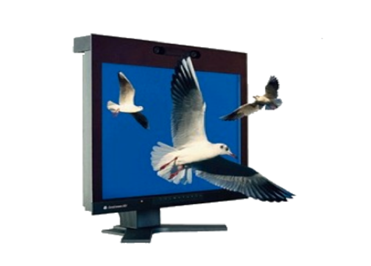
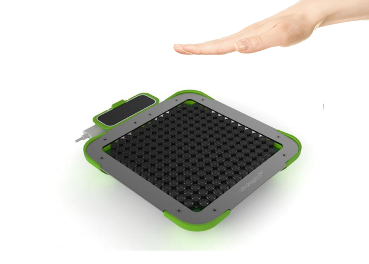

Device
SeeFront 3D monitor

Autostereoscopic 3D monitor - See Front, tracks user’s eyes, then projects different views for left and right eyes, so the user could see 3D objects pop out the screen due to parallax.
Leap Motion
With Leap Motion, user’s hand gestures are captured to interact with objects in the mid-air.
Ultrahaptic

Ultrahaptic, a sonic device that acts on user’s hand, and gives meaningful haptic feelings, is used for providing touch feedback when users interact with mid-air virtual object.